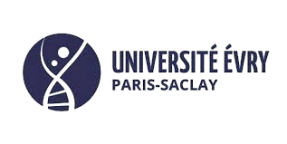
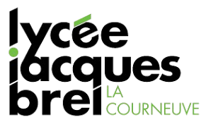
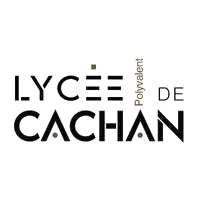
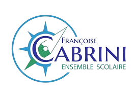

- Mes formations -
-
2024-2025 Double diplôme Master Relations Publiques et Multimédia (RPM)

École de Management d'Innovation Technologique (EMIT)
Université Fianarantsoa
Fianarantsoa (Madagascar) -
2022-2025 Master Cultures et Métiers du Web (CMW)
Université Gustave Eiffel
Champs-sur-Marne (77)
Mémoire : Le manga et les représentations sociales - Étude de cas des communautés Reddit de One Piece
Séjours d'études : Madagascar, Corée du Sud -
2022 Licence Professionnelle Chargé de Communication Institutionnelle Corporate (LPCCIC) 
Université Paris Saclay
Evry-Courcouronnes (91)
Mémoire : Comment la communication interne peut être moteur du changement en entreprise ? -
2020 BTS Communication 
Lycée Jacques Brel
La Courneuve (93) -
2018 BTS Économie Sociale et Familiale (ESF) 
Lycée Maximilien Sorre
Cachan (94) -
2016 Baccalauréat Sciences et Technologies de la Santé et du Social (ST2S) 
Ensemble Françoise Cabrini
Noisy-le-Grand (93)